Fukusaki, Hyogo: things to do, food and stays
Fukusaki · Hyogo
Fukusaki
Highlighted on the Hyogo map.
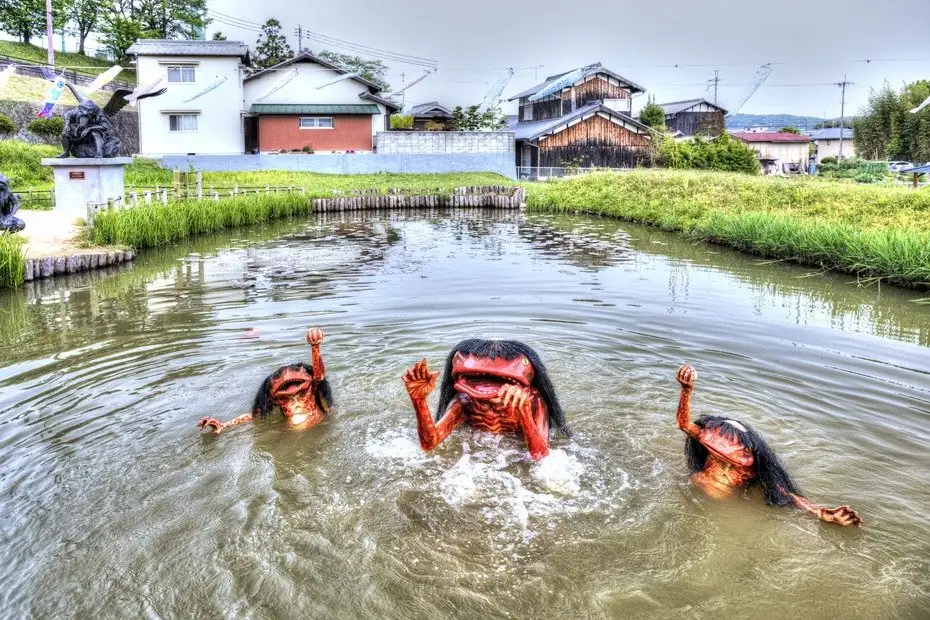
Stay
NIPPONIA 播磨福崎蔵書の館
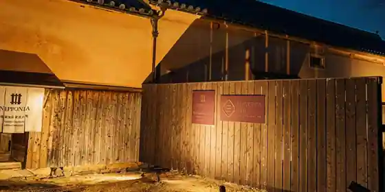
NIPPONIA Harima Fukuzaki Zosho No Kan
ＮＩＰＰＯＮＩＡ 播磨福崎 蔵書の館
NIPPONIA Harima Fukuzaki Zosho No Kan
Dining
もちむぎのやかた
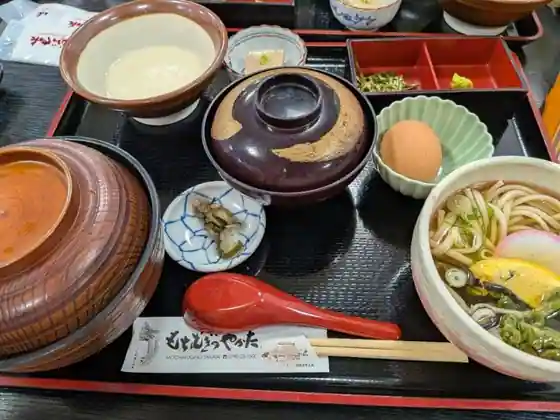
Mochimuginoyakata
ズンバーグ 福崎本店
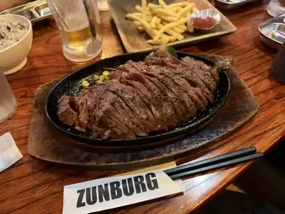
Zunbagu Fukuzaki Hon
蕎麦とさーもんと・・・ 有庵
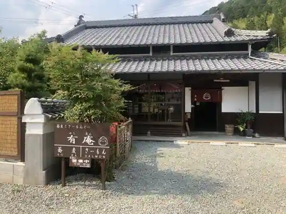
Soba Tosamonto Ari Iori
ピッツェリア ダ フィオーレ
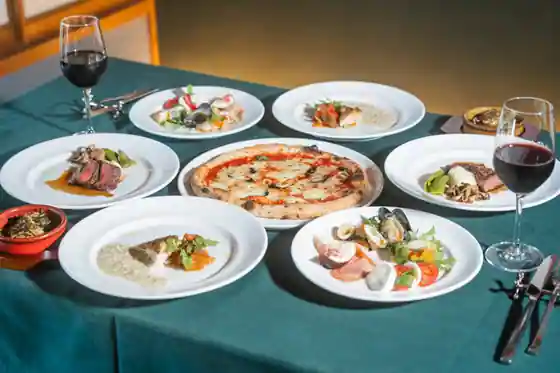
Pizzeria Da Fiore
喫茶 ラヴリ
Kissa Ravuri
鯛の夢
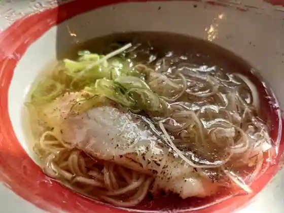
Tai No Yume
食べ処くろすけ
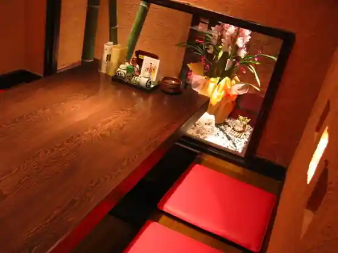
Tabe Tokoro Kurosuke
パン工房 幸福堂
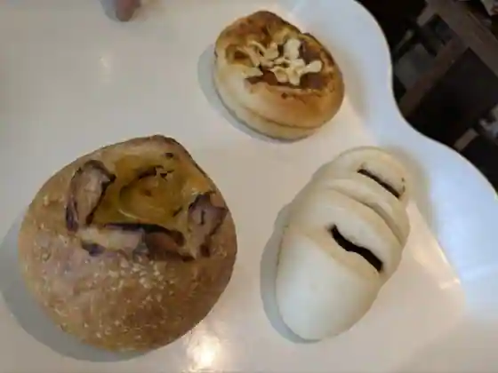
Bakery Kobo Kofuku Do
珈琲 茶蔵
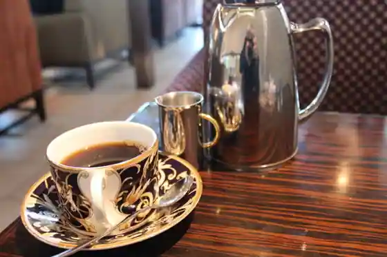
Coffee Cha Kura
たいの鯛 福崎店
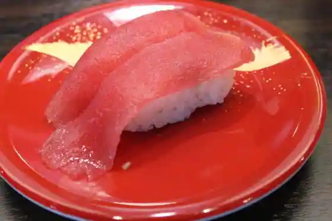
Taino Tai Fukuzaki
福崎東洋ゴルフ倶楽部レストラン
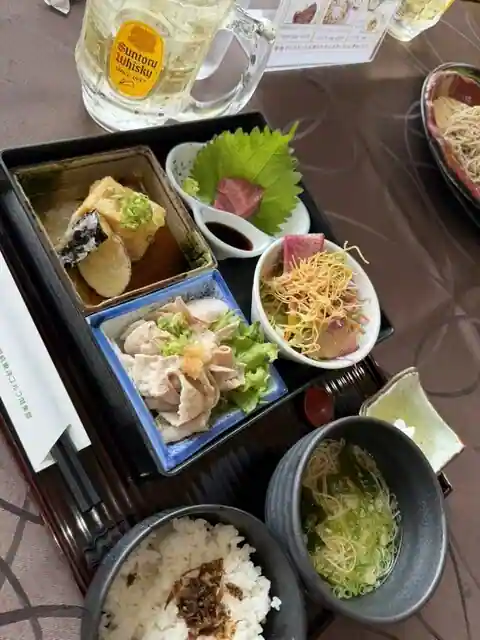
Fukuzaki Toyo Gorufu Kurabu Restaurant
Dolceria mimosa primavera
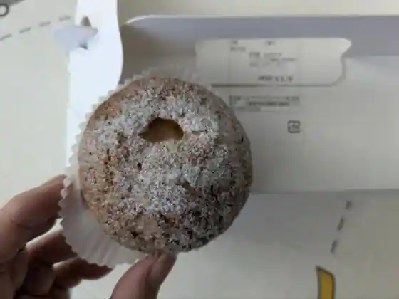
Dolceria mimosa primavera
ファームズキッチン 三木家
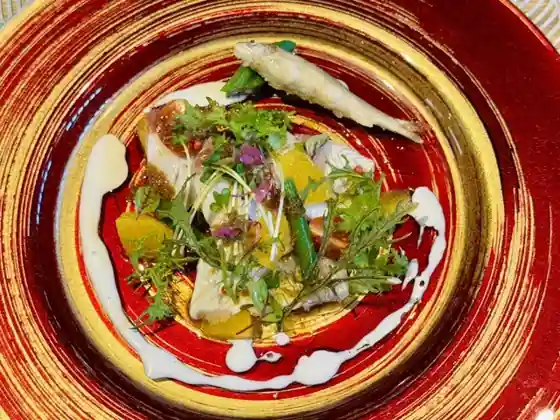
Famuzu Kitchen Miki Ie
サタディサン
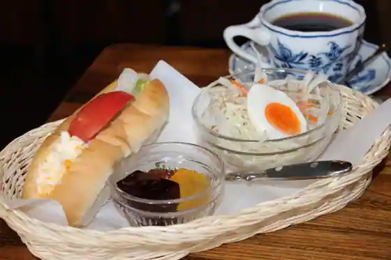
Satadisan
わらびもち館 本家 治五郎
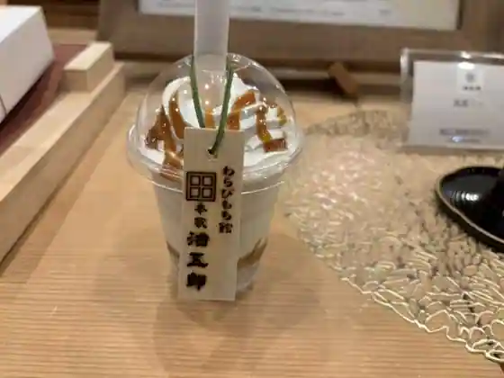
Warabimochi Kan Honke Jigoro
焼肉ハウス北山
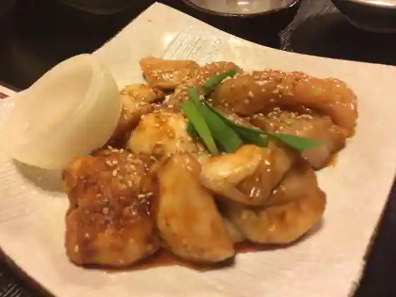
Yakiniku House Kitayama
one for two
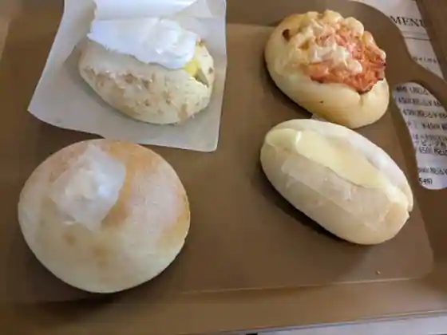
one for two
ふるさと庵 幟
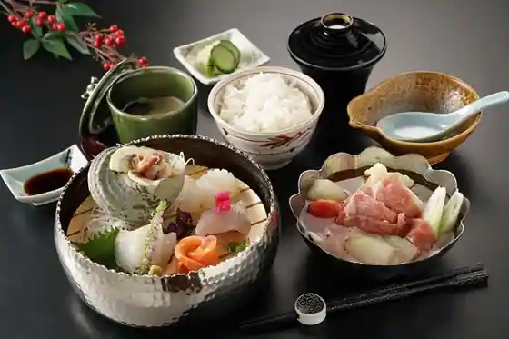
Furusato Iori Shi
コメダ珈琲 福崎店
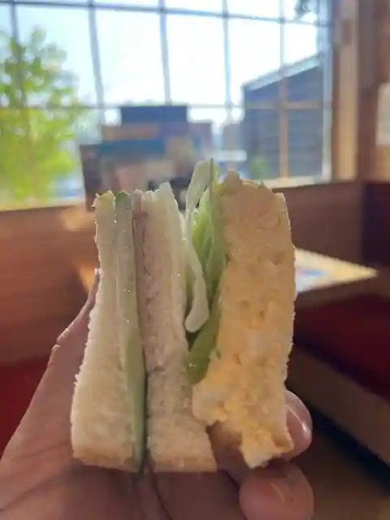
Komeda Coffee Fukuzaki
福崎町辻川観光交流センター カフェ
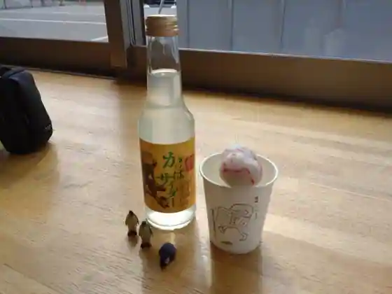
Fukuzaki Machitsuji Kawa Kanko Koryu Center Cafe
古民家喫茶 動き人
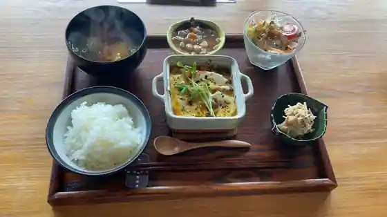
Ko Minka Kissa Ugoki Nin
姉妹
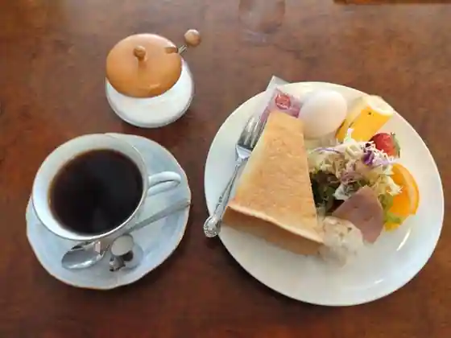
Shimai
月の珈琲店
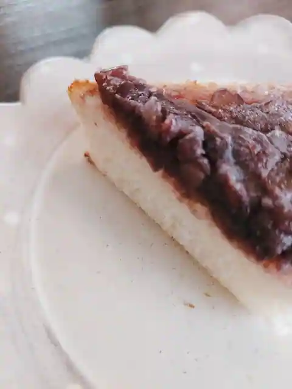
Gatsu No Coffee
Sights
Kappa no Kawataro to Kawa Jiro